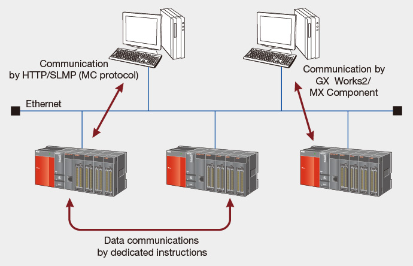
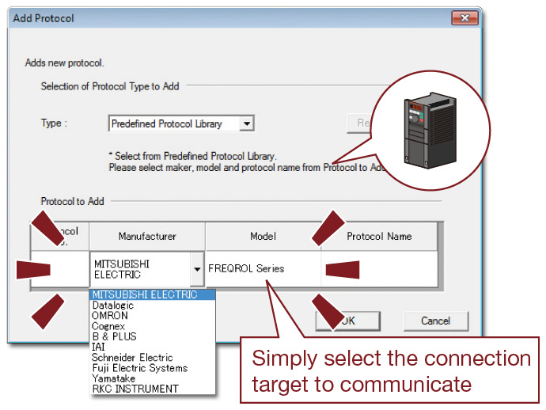
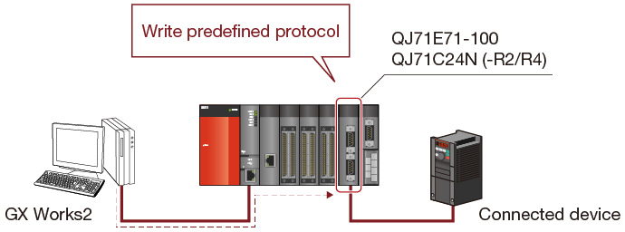
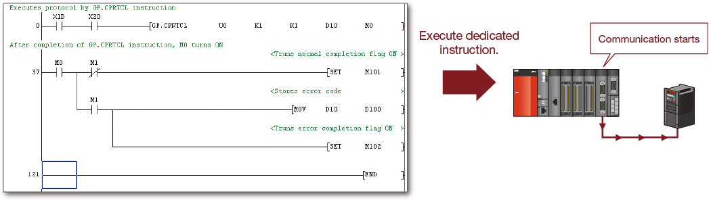
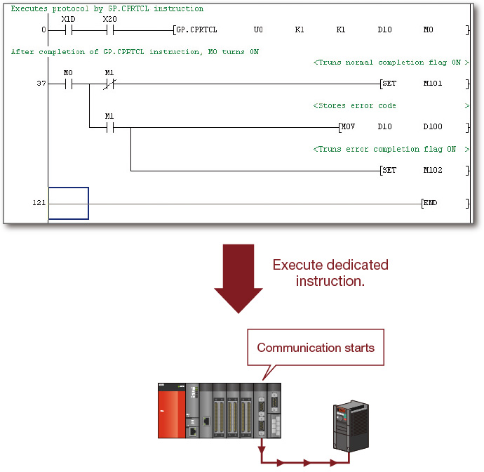
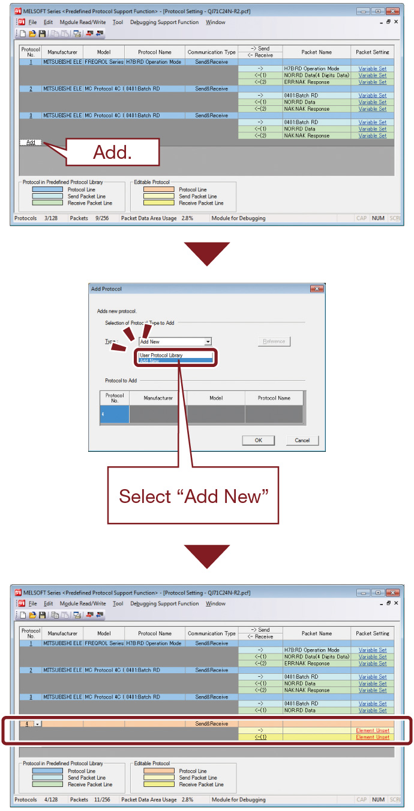
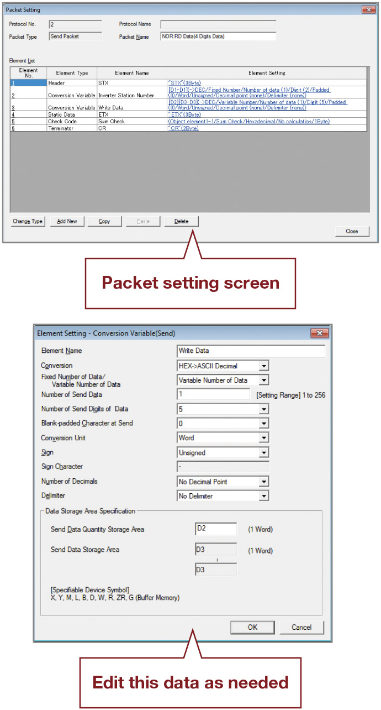

Pengendali Seri MELSEC-Q
Fitur Produk -Jaringan-

Ethernet
Modul antarmuka yang dapat dihubungkan dengan beberapa perangkat Ethernet
Modul antarmuka Ethernet
- 10BASE-T/100BASE-TX
- Gunakan instruksi khusus untuk komunikasi antara CPU pengontrol terprogram.
- Pustaka komunikasi dan kode contoh tersedia untuk memungkinkan server web mengakses salah satu modul Ethernet dan bertukar informasi dengan modul CPU pengontrol terprogram. Dengan cara ini, server web dapat menjadi tuan rumah halaman web yang memungkinkan pengoperasian pengontrol terprogram dari jarak jauh melalui Internet melalui peramban web.
- Untuk meningkatkan efisiensi pemrograman, pemeliharaan, dan penelusuran kesalahan, beberapa koneksi CPU dapat dibuat secara bersamaan menggunakan GX Developer dan GX Works2.
- Fungsi E-mail memungkinkan modul Ethernet untuk mengirim e-mail dengan lampiran dalam format biner, ASCII, dan CSV melalui server email.
- Lakukan pemeriksaan keberadaan dan jaga koneksi tetap terbuka menggunakan fungsi KeepAlive atau PING. Ini dapat digunakan untuk memastikan konektivitas dan menemukan kesalahan dengan cepat.

Kombinasi modul komunikasi Ethernet/serial dan GX Works2 (fungsi pendukung protokol yang telah ditetapkan sebelumnya)
Komunikasi dengan perangkat apa pun dapat dimulai dengan cepat hanya dengan memilih perangkat dari pustaka protokol yang telah ditetapkan sebelumnya
❶ Pilih produsen dan model (seri) perangkat yang akan dihubungkan.
Tidak perlu pengaturan protokol yang rumit dan telah ditetapkan sebelumnya untuk perangkat tersebut.
Cukup pilih dari pustaka protokol komunikasi seperti MODBUS® dan BACnet®, yang telah disiapkan sebelumnya.

❷ Tulis protokol yang telah ditetapkan sebelumnya ke modul.
Tulis protokol yang telah ditetapkan sebelumnya ke modul QJ71E71-100, QJ71C24N (-R2/R4). Hingga 128 protokol dapat ditetapkan dalam satu modul.

❸ Jalankan protokol dengan program ladder.
Dengan program ladder, komunikasi dengan perangkat eksternal apa pun dapat dilakukan hanya dengan menjalankan instruksi awal protokol khusus yang telah ditetapkan sebelumnya.

Mudah untuk menyiapkan dan mengedit protokol yang telah ditentukan sebelumnya
- Bahkan jika perangkat yang akan dihubungkan tidak terdapat dalam pustaka protokol yang telah ditentukan sebelumnya, perangkat tersebut dapat ditambahkan dengan mudah.

- Isi protokol yang telah ditetapkan sebelumnya dapat ditampilkan dalam bentuk daftar. Protokol dapat diedit dengan mudah.

- Didukung oleh QJ71C24N (-R2/R4) dengan versi fungsi B dan nomor seri yang 5 digit pertamanya adalah 11062 atau lebih tinggi.
- Didukung oleh produk dengan lima digit pertama nomor produk QJ71E71-100 adalah 15042 atau lebih baru.